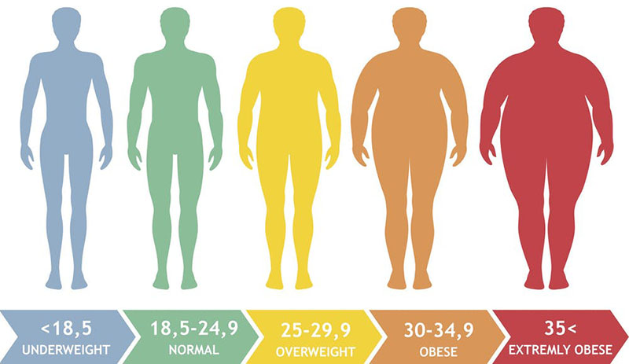
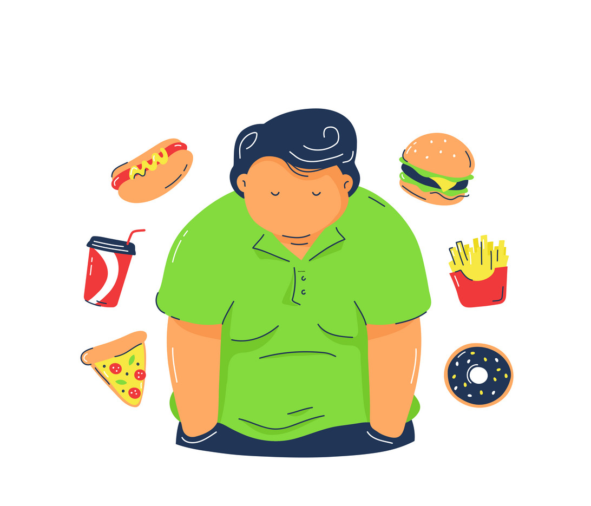

Obezitatea, recunoscută de curând ca fiind o boală cronică progresivă, reprezintă
una dintre cele mai mari probleme cu care ne confruntăm. Ea este definită ca fiind
cantitatea de grasime în exces din corp.
Rolul nostru principal este de a îmbunătăți gradul de conștientizare a prevenirii și
gestionării obezității, dar și privind amploarea problemei dezvoltată în ultimii ani
pe întreaga planetă, afectând atât copii, tineri cât și adulți de toate vârstele.


Există studii ce susțin că obezitatea este, până la un punct,
o condiție moștenită genetic, însă principalul motiv al obezității este reprezentat de stilul
de viață nesănătos, ce implică alimentație nepotrivită și instalarea sedentarismului.
Noi susținem un stil de viață sănătos ce implică minim 30 de minute de mișcare pe zi și o alimentație
ce include cât mai puțin fast-food și cât mai multe fructe și legume. Recomandăm, de asemenea, consumul
a 2l de apă pe zi.